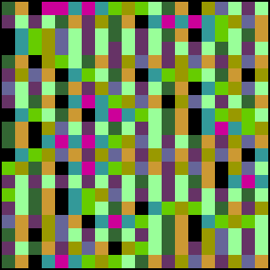
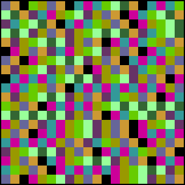

Tent
1.2, 1.32
1.4, 1.5
1.7, 1.8
1.9, 1.999


s = 1.4. The bands have almost merged. Click the picture to enlarge.
s = 1.5. The bands have mreged, so there is much less visible structure. But do you see some? Click the picture to enlarge.